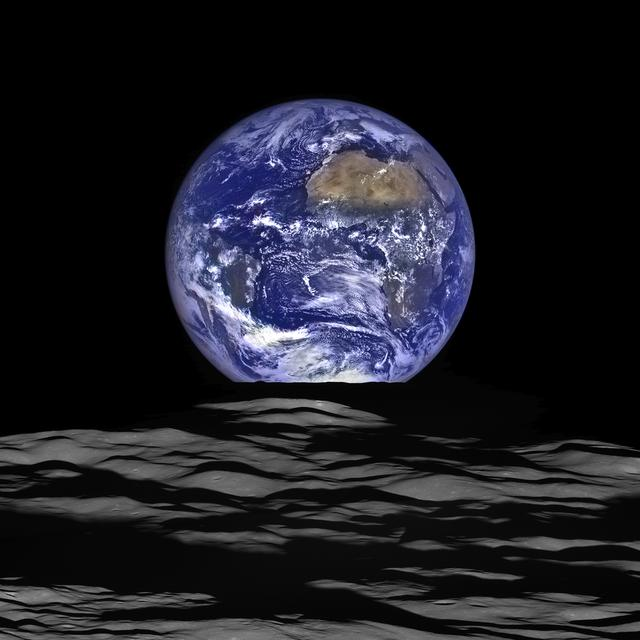
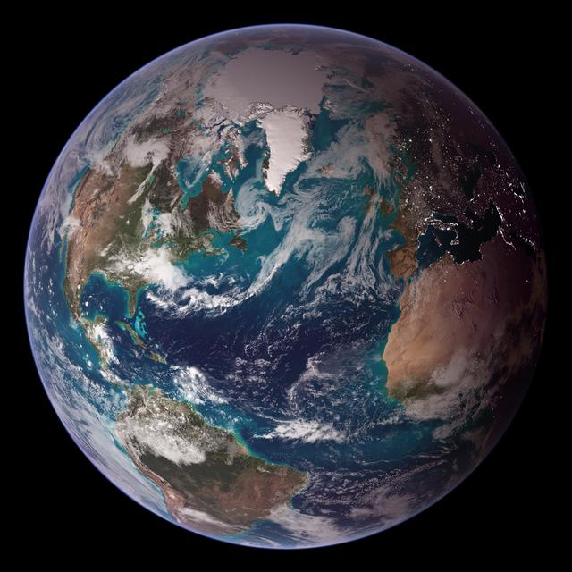

Earth
Earth is our home and the only planet we know of with life on its surface. Its oceans cover most of the planet, and its atmosphere helps keep conditions suitable for life.
Type
Rocky planet
Distance
149.6 million km
Fun Fact
71% water
Earth is our home and the only planet we know of with life on its surface. Its oceans cover most of the planet, and its atmosphere helps keep conditions suitable for life.
Rocky planet
149.6 million km
71% water
NASA IMAGE ARCHIVE


Earth is at a distance from the Sun where liquid water can exist. Its atmosphere helps keep the planet warm and protects the surface from some harmful radiation.
The button applies a simple lighting effect to the illustration; it is not a live day-night map.
Earth turns once about every 24 hours. Use the button to switch the illustration.